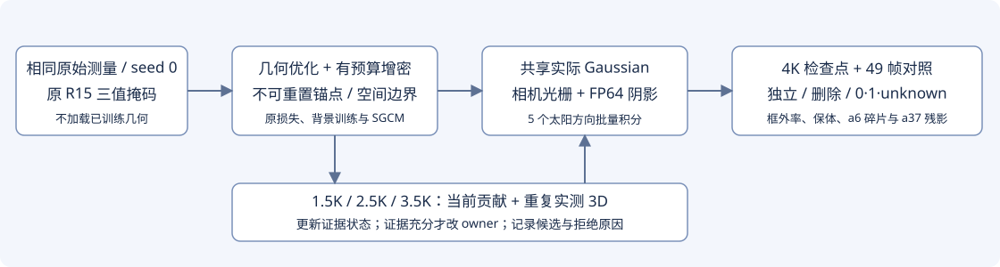
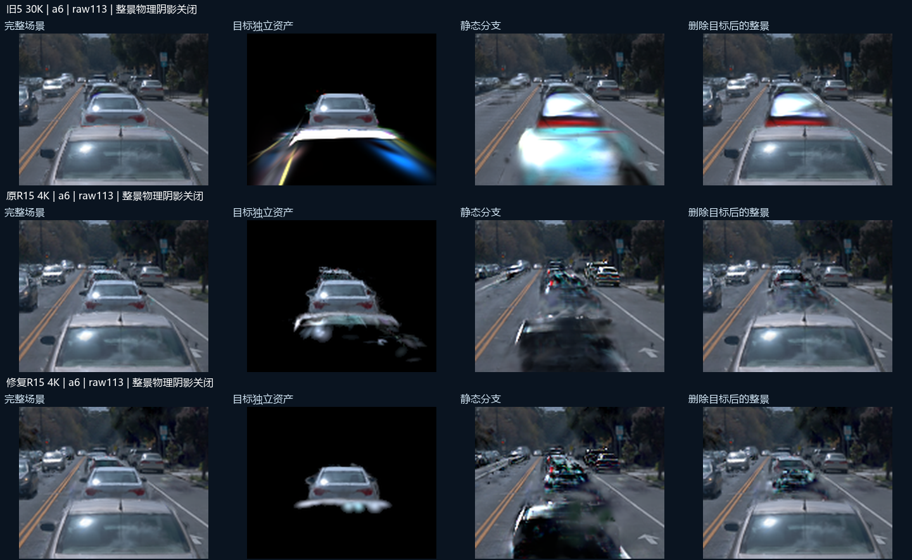
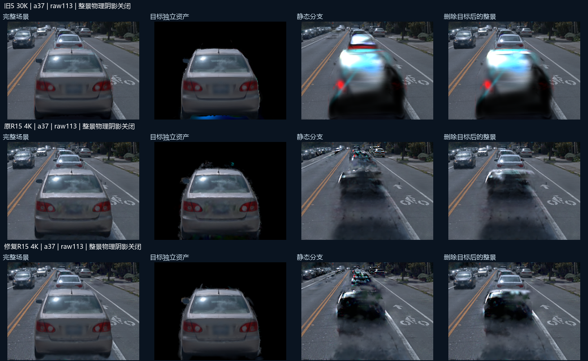
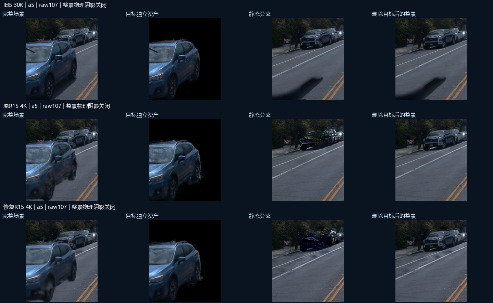
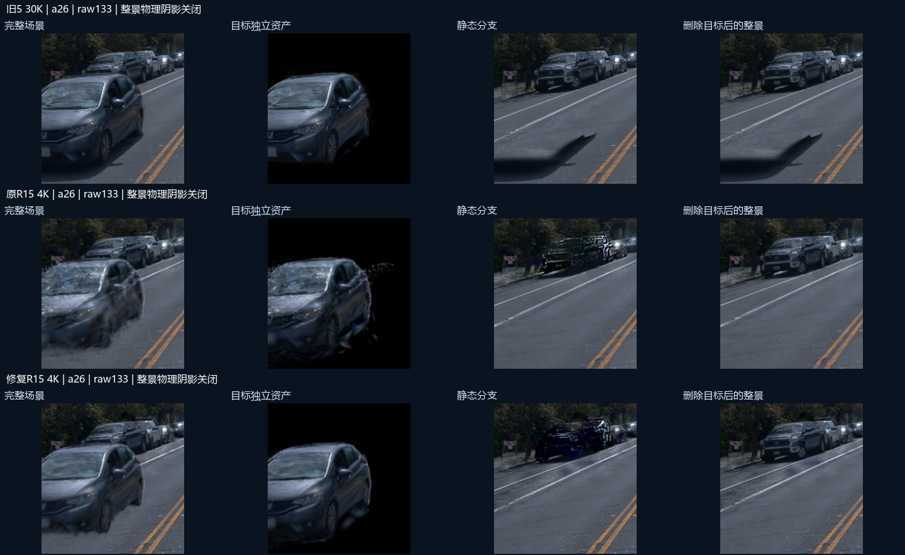
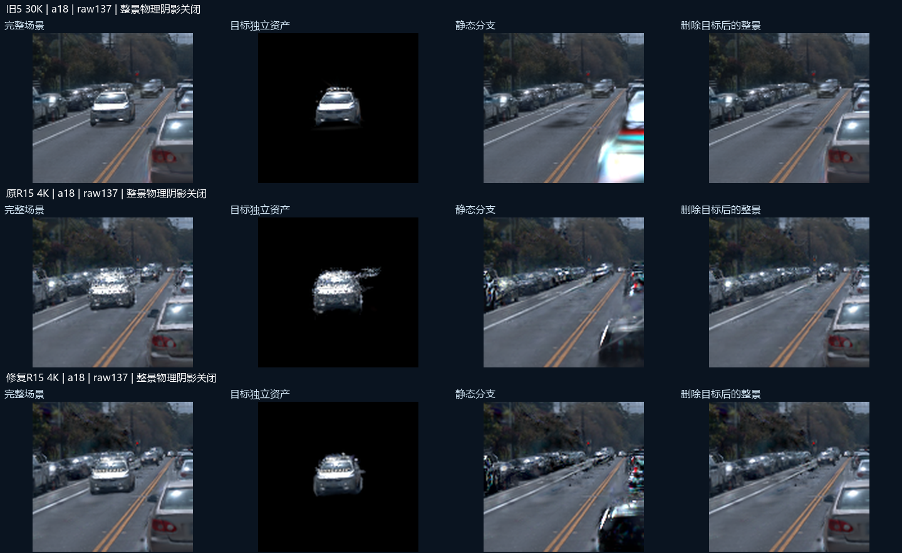

2026-10-18 · WS-V82-R15-REPAIR-4K-20261018 · R15 内收敛修复限制训练外扩，让当前几何真正进入归属纠错
当前：真实GPU自检、4K训练、五身份49帧评估及动态／静态分支渲染已完成；质量未自动判为通过。
旧五身份 30K、旧五身份渲染、冻结三值投影与修复 GPU 自检均已完成。有限控制器已完成全部GPU工作；检查点和逐帧证据保留。

先把现象与机制说清楚
五辆车内部没有 unknown，是因为初始点和其 4K 后代均继承状态 1。全场景仍有 463,520 个 unknown 证据 Gaussian；外部未入场测量池与 Gaussian 是两类对象。原归属状态是 buffer，反传不会直接改它；归属本应由定期审计、显式 owner 转移完成。此前候选入口、reset 时机与证据门控使这条路径没有完成有效转移。
本次仍采用显式证据纠错：几何和外观由梯度优化，证据状态和 owner 由重复观测审计更新。明确反证可以使 1 → unknown；unknown 不会因为没证据而变成道路。内部 raw 状态是 0=unknown、1=Actor、2=static；可视化的二值“0=非目标”需与 raw 编码区别。
实际代码修复
| 问题 | 修复与本次启用值 | 证据边界 |
|---|
| 增密不断重设参考，允许累计漂移 | 新增不可被 clone/split 重设的来源坐标。Actor 中心相对来源的累计位移 ≤0.25m；每步与拓扑后都投影。只清零被截断分量的 Adam 动量。 | 独立归属变更有实测依据时才允许重设坐标系与锚点。 |
| 软框损失不能阻止外扩 | 使用真实车框 +0.10m 余量；初始已越框种子保持其原始容许包络。最大主轴 σ 不超过原来源 σ 的 1.5 倍。 | 不按高度切车底，不把初始越框点删除。0.25m /0.10m /1.5 是本次明确策略，须检查保体代价。 |
| Actor 点数指数增长 | 每次通用增密，每个 Actor 的净增量 ≤当前点数 2%；不超过初始数量 4 倍的增密容量。审计为 unknown 的 Actor 点暂停增密。 | 静态 SGCM、背景容量保持原设置。独立有证据的 owner 转入单独计数。 |
| 旧来源标签拦住当前错误点；状态一直继承 1 | 对当前全场景 alpha×T 计算正域、已知负域、实测道路域贡献。无旧 source tag 也能进入候选；重复反证撤销确定状态，重复身体 3D 可确认状态或改 owner。 | 只有具有 BUILD 三维证据库的 7 个身份可获认证。来自真实道路的正证据、过大支撑均可否决整点转车。 |
| 审计碰到 opacity reset | 改为 1500、2500、3500 步；reset 仍在 3000 步。配置检查拒绝两者碰撞；逐次保存候选漏斗、拒绝与状态／owner 转移。 | 实际改 owner 可以仍为零；必须由数据说明，不能用“脚本完成”替代效果。 |
| 阴影数值失稳且过慢 | 把已验证的 FP64 因子积分接入模型和恢复入口，五太阳方向批处理；相机与阴影使用同一实际几何。 | 旧配置可精确历史重放。修复实验显式选用 factor_fp64；真实 GPU 自检已经通过。 |
4K 实验合同
- 同一 R15 原始测量初始化、原三值掩码、seed=0；771,821 个初始 Gaussian、43 个 Actor。原 GN11／旧3／旧5／原 R15 检查点保留。
- 新目录从头训练 4,000 次；仍按原 geometry_steps=30,000 计算学习率，防止压缩日程造成混淆。保留原损失、100×完整已知域身份监督、SH、环境贴图、背景联合训练。
- 新路径审计现有点；外部候选池保留，不重放旧 3K 的 459 点补入。这项协议差异明确登记。
- 这是组合工程修复，不能从单次结果归因某一个改动。没有新增 R16／R17，也未恢复原 45K 长训。
- 输出 1K／2K／3K／4K 检查点及三次审计。评估 a5、a6、a18、a26、a37 全 49 帧：独立 RGB、alpha、全场景可见 alpha、删除，以及关闭阴影后的删除。
怎样判定有用
首先检查有限梯度、恢复一致、阴影分块误差、累计漂移和新增越界；然后比较点数增长、精确框外率、带余量框外率、主轴尺度、证据状态变化及实际 owner 变化。必须同时看车体保留与已知正域可见 alpha，不能仅用框外率降低宣布改善。
a6：检查独立资产下部碎片是否减少，以及轮胎／车体是否被过度约束。a37：检查删除后静态车形是否减少；若静态道路仅在外观上画了车，三维审计应拒绝整点转车。此项外观残影尚无修复通过证据。
验证记录
针对性 26/26 通过：分裂谱系、累计边界、Adam 分量、旧行为兼容、真实审计函数的 unknown/owner 更新、FP64 薄高斯分块一致与有限梯度，以及既有归属／后端测试。
额外运行旧 CPU reference 集成套件：12/16 通过，4 项失败；在未改动的原 R15 源码上复现相同 4 项失败（3 项缺 reference 静态分支输出，1 项旧外观初始化断言）。这些未计为通过，也未改动无关历史测试。真实 GPU 自检已完成 2 步训练、46 帧完整归属审计、分块一致性与严格恢复检查，smoke 模型未用于 4K 初始化。GPU 记录。
完整配置 · 实验合同 · 真实输入预检 · 26 项测试 · 旧套件记录 · 原版复现记录 · 排队快照
页面为本次登记快照，不是实时状态。新 4K 已完成；新旧全部任务、结果保存和 GitHub v82 推送完成后，按用户授权关闭 AutoDL。human_verdict 未填写。
实际 4K 结果：工程边界与质量分开检查
相同原始初始化的 4,000 步、三次归属审计、五身份全 49 帧独立／删除以及动态／静态分支均已完成。原长训仍暂停。以下数值证明几何边界和审计通路实际生效，尚不等于资产质量通过。
打开五身份同步视频，模型选择“原R15 与 修复R15”或“三版对照”。一条时间轴检查全部49帧；三维中心不再作为主要验收方式。
| 身份 | 原4K → 修复4K点数 | 相对原始种子增长 | 真实框外中心率 | 修复框+0.1m外点数 | 容许域外 / 漂移超限 / 最大累计位移 | 最大σ(m) | 内部unknown | 同一正域可见α均值 |
|---|
| a6 | 123,800 → 6,750 | 35.85× → 1.95× | 24.10% → 2.12% | 0 | 0 / 0 / 0.250000m | 0.186 → 0.090 | 50 | 0.936 → 0.931 |
| a37 | 83,130 → 19,748 | 8.03× → 1.91× | 17.53% → 8.53% | 0 | 0 / 0 / 0.250000m | 0.185 → 0.109 | 20 | 0.931 → 0.965 |
| a5 | 53,434 → 16,439 | 5.42× → 1.67× | 4.22% → 0.62% | 0 | 0 / 0 / 0.250000m | 0.167 → 0.090 | 53 | 0.932 → 0.949 |
| a26 | 80,553 → 14,285 | 9.86× → 1.75× | 6.85% → 0.80% | 0 | 0 / 0 / 0.250000m | 0.174 → 0.090 | 27 | 0.903 → 0.942 |
| a18 | 125,207 → 3,684 | 67.17× → 1.98× | 46.44% → 4.64% | 0 | 0 / 0 / 0.250000m | 0.190 → 0.090 | 0 | 0.913 → 0.915 |
真实框外与容许域外是两项统计：初始已越框种子保留原包络，所以真实框外率不必为零。可见α使用三版相同的R15正像素域（49帧像素加权，PNG量化）；它是保体诊断，不是独立GT或编辑质量分数。完整三版保体统计 · 全量几何统计。
归属审计确实执行了什么
| 步数 | 帧 | 实际owner变化 | 状态转移矩阵（行旧、列新；U/Actor/Static） | 审计耗时 |
|---|
| 1500 | 46 | 86 | [[123027, 0, 0], [93, 48511, 0], [0, 86, 641908]] | 15.60s |
| 2500 | 46 | 39 | [[123098, 0, 0], [38, 59188, 0], [0, 39, 699754]] | 15.54s |
| 3500 | 46 | 30 | [[123059, 3, 0], [64, 66553, 0], [0, 30, 443160]] | 12.24s |
矩阵中的unknown是证据状态；硬owner仍负责渲染。反证撤销状态不会把点自动改为道路。owner变化仍需要重复实际身体3D证据，不把a37道路上的车形整体转成Actor。1.5K记录 · 2.5K记录 · 3.5K记录。
同帧直接检查（完整动态过程见同步视频）
a6 · raw113 · 上旧5 / 中原R15 / 下修复R15

a37 · raw113 · 上旧5 / 中原R15 / 下修复R15

a5 · raw107 · 上旧5 / 中原R15 / 下修复R15

a26 · raw133 · 上旧5 / 中原R15 / 下修复R15

a18 · raw137 · 上旧5 / 中原R15 / 下修复R15

没有配对干净道路编辑真值；减少点数和框外率不替代对车体、a6下部碎片与a37静态车形的视觉复核。human_verdict=null；组合修复结果不归因单一改动。
实际图像复核：仍有未解决项
| 身份／锚帧 | 实际观察 |
|---|
| a6 / raw113 | 原R15的分散外溢在修复版中更紧凑，车身仍在；下部白色带状支撑仍然明显，未成为干净资产。旧5同帧有更大的白带和向下延伸支撑。 |
| a37 / raw113 | 修复版保留车体，部分车顶边缘仍有毛刺；关闭物理阴影删除后，静态车形仍然明显。该残影未解决。 |
| a5 / raw107 | 修复版保留可见车体，原R15周边散点较少；底部仍有模糊支撑。本锚帧删除道路未见与a37相同的明显车形，不外推全49帧通过。 |
| a26 / raw133 | 修复版保留车体，原R15车底和侧面散点较少；本锚帧删除后道路未见明显车形，不外推全49帧通过。 |
| a18 / raw137 | 原R15的明显白色散点收敛为更紧凑车体，仍有外观细节问题；本锚帧删除未见明显车形，不外推全49帧通过。 |
整体资产质量未通过：a6下部白带和a37静态车形仍未解决。以上是明确列出的锚帧观察，不能当成全49帧人工验收。复核范围与限制。自动浏览器拒绝file://，未冒称交互浏览器播放验收；视频帧序和同步逻辑另有检查。